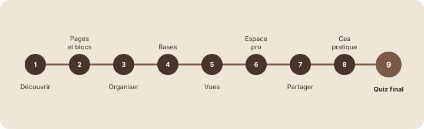

Quiz final
Étape 1 : comprendre
Tu arrives au bout du parcours. Ce quiz final reprend les notions clés des huit modules, à travers des situations concrètes chez Studio Nova.
Comment ça marche :
- dix questions, une ou deux par module ;
- pour chacune, choisis une réponse puis clique sur « Valider » : la correction s'affiche tout de suite ;
- compte tes bonnes réponses au fur et à mesure. À partir de 8 sur 10, tu maîtrises les bases de Notion ;
- en dessous, pas de souci : chaque correction indique le module à revoir.

Le quiz final ne note pas : il te montre ce qui est acquis et ce qui mérite une révision.
Astuce : réponds sans revenir en arrière dans les leçons. C'est le meilleur moyen de savoir ce que tu as vraiment retenu.
Lire une correction
Avant de commencer, voici une question corrigée, pour voir comment lire une correction.
Question : Lucas veut retrouver une page dont il connaît seulement un mot du contenu. Que fait-il ?
a) Il parcourt toute la barre latérale.
b) Il utilise Ctrl + K : la recherche fouille aussi le contenu.
c) Il demande à Emma de recréer la page.
Chaque correction explique pourquoi la bonne réponse est la bonne, et renvoie au module concerné. Lis-la même quand tu as juste : elle consolide le raisonnement.
Le quiz final
Dix questions. Valide chacune avant de passer à la suivante.
Choisis une réponse avant de valider.
L'espace de travail regroupe toutes les pages d'une personne ou d'une équipe. À revoir : module 1.
Choisis une réponse avant de valider.
Chaque ligne est un bloc. À revoir : module 2, leçon 3.
Choisis une réponse avant de valider.
« /page » crée une sous-page ; « @ » ou « /lien » pointent vers une page existante. À revoir : modules 2 et 3.
Choisis une réponse avant de valider.
Un lien donne accès sans déplacer ni dupliquer. À revoir : module 3, leçon 2.
Choisis une réponse avant de valider.
Des éléments du même genre, décrits par les mêmes informations : une base. À revoir : module 4, leçon 1.
Choisis une réponse avant de valider.
La propriété Personne permet de notifier et de filtrer par responsable. À revoir : module 4, leçon 4.
Choisis une réponse avant de valider.
Les vues affichent les mêmes données. À revoir : module 5, leçon 1.
Choisis une réponse avant de valider.
Un filtre cache sans supprimer. À revoir : module 5, leçon 4.
Choisis une réponse avant de valider.
Type + sujet + date : on sait ce que contient la page sans l'ouvrir. À revoir : module 6, leçon 2.
Choisis une réponse avant de valider.
Peut commenter : lire et commenter, sans modifier. À revoir : module 7, leçon 2.
Exercice · dans Notion
Ton bilan
- Compte tes bonnes réponses.
- Pour chaque erreur, note le module indiqué dans la correction.
- Ouvre ces modules dans le sommaire et refais leur exercice récapitulatif.
Résultat attendu : un score sur 10 et, si besoin, une courte liste de modules à revoir. À 8 sur 10 ou plus, tu peux passer directement au récapitulatif.
Étape 3 : vérifier
Objectif de la leçon
Tu sais maintenant ce que tu maîtrises déjà dans Notion et ce qui mérite une révision.
Choisis une réponse avant de valider.
Les corrections te disent exactement quoi revoir : inutile de tout reprendre.